地政学
キトは太平洋岸ではなくアンデスの内陸に置かれた首都で、政府、外交、司法、抗議行動が谷の中心へ集まります。石油、鉱業、アマゾン、先住民運動、治安政策をめぐる全国政治が街路に現れます。標高の高さも象徴です。
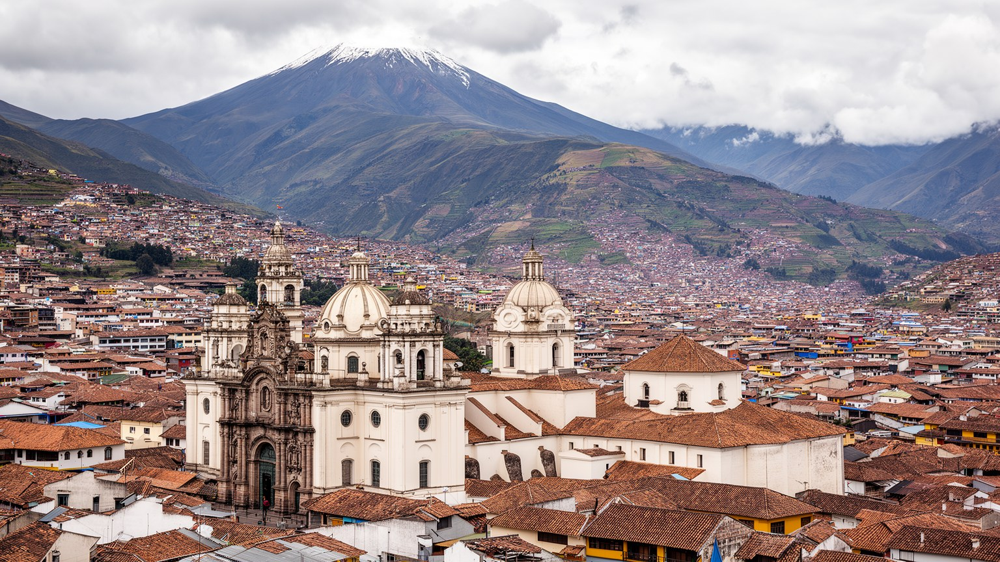
🇪🇨 エクアドル / 南米 / World City Atlas
赤道近くのアンデス高地に細長く広がる首都です。火山の斜面、世界遺産の旧市街、政府機関、先住民市場、交通改革、住宅リスクが同じ谷の中で重なります。
都市の骨格
キトは標高約2,850メートルの高地で、東西を山に挟まれた細長い都市です。政治の中心であると同時に、旧市街、郊外住宅、先住民文化、火山と地震のリスクを抱える生活都市でもあります。
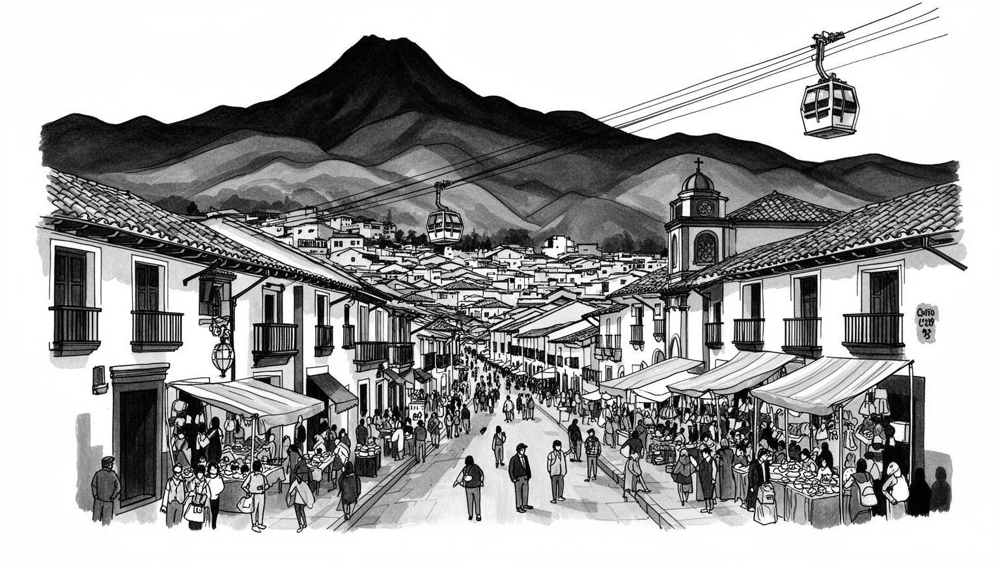
キトは太平洋岸ではなくアンデスの内陸に置かれた首都で、政府、外交、司法、抗議行動が谷の中心へ集まります。石油、鉱業、アマゾン、先住民運動、治安政策をめぐる全国政治が街路に現れます。標高の高さも象徴です。
行政、金融、商業、教育、観光、医療、空港関連サービスが雇用を支えます。旧市街の店舗、北部のオフィス、郊外の工業と物流、非公式商業が同時に動き、通勤時間と賃金差が生活を左右します。若者の職探しも重要です。
カトリックの聖堂と行列、先住民の言語と市場、メスティーソの都市文化、大学、音楽、民芸が重なります。植民地の宗教美術は壮麗ですが、土地と権力の記憶も抱え、儀礼と政治意識へ結びつきます。祭礼は広場を変えます。
旅行者は旧市街、赤道碑、テレフェリコ、火山景観を巡りますが、住民の日常は坂道、寒暖差、渋滞、住宅費、治安、雨季の土砂災害に左右されます。観光の近くに市場、学校、家族の生活があります。坂道の移動も日課です。
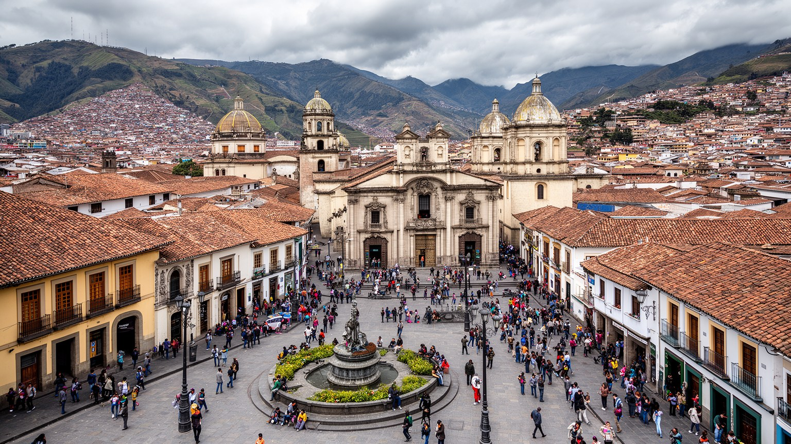
キトの歴史地区は、アンデスの斜面に築かれた植民地都市の骨格を今も濃く残します。石畳、広場、修道院、聖堂、白い壁、木製バルコニーは観光客に強い都市像を与えますが、その景観は単なる保存物ではありません。先住民の土地、植民地行政、カトリック布教、独立運動、共和国政治、都市貧困、住宅再生が重なってきた場所です。昼には学校の制服姿、役所へ急ぐ人、菓子や新聞を売る露店、土産物店、買い物帰りの高齢者が混ざり、鐘の音とバスの排気、揚げ物の匂いが坂道に広がります。聖週間の行列や独立記念の式典は広場を儀礼の舞台へ変え、夜には音楽バー、家族食堂、警備、観光の足音が別の顔を作ります。世界遺産としての評価は修復投資を呼びましたが、家賃上昇や観光向け転換で長く暮らした住民の居場所が変わる負担もあります。旧市街を読むには、建物の年代だけでなく、誰が住み続け、誰が商売を続け、どの記憶が表通りに展示されるかを見る必要があります。キトの中心は過去の博物館ではなく、祈り、政治、学校、買い物、夜の音楽が同じ坂道で交差する生きた都市空間です。修復された外壁の裏には、老朽住宅、相続、店舗更新、治安、観光収入をめぐる細かな交渉があります。広場のベンチは待ち合わせ、休憩、路上演奏、政治談義の場所にもなり、旧市街の時間を住民の側へ引き戻します。
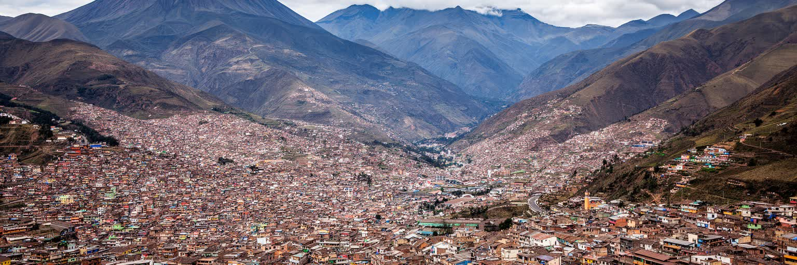
キトの都市形態は、政治や経済の選択だけでなく、アンデスの地形そのものに強く支配されています。市街地はピチンチャ火山の東側斜面と谷底に沿って南北へ伸び、東西方向には急な斜面、河川、丘陵、地すべり地形が壁のように立ちはだかります。標高の高さは一年を通じて涼しい気候を生み、赤道直下でありながら熱帯低地とは違う生活リズムを作ります。朝は紫外線が強く、午後に雲が湧き、夜は冷え込み、学生や勤め人は薄い上着を手放しにくいです。山の近さはテレフェリコや週末ハイキング、サイクリング、サッカー練習の魅力である一方、火山灰、地震、斜面崩壊、豪雨時の土砂災害、谷にこもる大気汚染を生活条件にします。都市が北へ伸び、東の谷や郊外へ住宅が広がるほど、通勤距離、学校選び、病院へのアクセス、災害時の避難は複雑になります。テレフェリコから見える都市の細さは観光の絶景であると同時に、土地利用の厳しさを示す地図でもあります。道路、地下鉄、排水、住宅、避難計画、緑地保全は、地形と交渉しながら作られます。遠くの峰は背景ではなく、市民の時間、移動、家の安全を決める近い存在です。地図上の距離が短く見えても、高低差と渋滞が人の行動範囲を変え、近所の感覚まで決めています。山の天気を読む習慣は、洗濯、通学、露店の準備、週末の外出にも染み込んでいます。
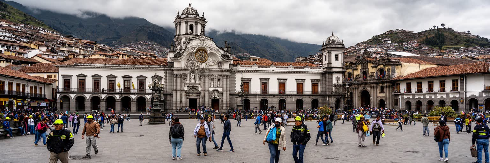
キトはエクアドルの政治首都として、大統領府、国会、司法、中央官庁、外交機関を抱えます。国の意思決定は旧市街や北部の行政地区で行われますが、その影響はアマゾンの油田、太平洋岸の港、農村の土地、先住民共同体、移民政策、治安対策にまで及びます。政治性は建物の集積だけでなく、抗議行動の集まる場所であることにも表れます。燃料補助、鉱業開発、労働、教育、治安、先住民の権利をめぐる対立は、地方から首都へ向かう行進や広場の占拠として可視化されます。ラジオ、テレビ、新聞、SNS、町内のチャットは、道路封鎖や学校休校、バス運行の情報を素早く広げ、家庭の判断を左右します。政府機能が高地の谷に集中するため、街路の封鎖や公共交通の停止は通勤、商売、病院予約、子どもの登校にも直接響きます。政治首都であることは、行政雇用とサービスを生む一方、全国の不満が日常空間へ入ってくることも意味します。宮殿や国会だけでなく、広場に座る人、警備の列、閉まる商店、議論する学生、地方から来た団体の宿泊場所まで見る必要があります。大統領府に近い路地で昼食を売る店も、デモの日には客足や安全を気にします。国家の危機はニュース画面だけでなく、シャッターを下ろす判断、帰宅経路、家族への連絡にまで降りてきます。首都の政治は食堂の会話や大学の討論にも入り込みます。
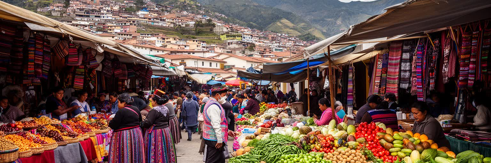
キトの文化は、植民地旧市街の教会だけで完結しません。市内の市場、バスターミナル、周辺高地への道、オタバロやコトパクシ方面との往来には、キチュア系をはじめとする先住民の言語、織物、農産物、食、商いが流れ込みます。市場ではジャガイモ、トウモロコシ、豆、果物、ハーブ、花、織物、帽子が並び、地方から来る販売者と都市の消費者が値段を交渉します。観光客は色彩豊かな民芸品に目を向けますが、その背後には土地利用、農村の貧困、女性の労働、移動費、学校教育、差別、政治的代表性の問題があります。子どもが店番を手伝い、祖父母が薬草や暦の知識を伝え、携帯電話のメッセージが仕入れ値や道路状況を知らせます。先住民文化は都市の装飾ではなく、エクアドル国家を形作る重要な主体であり、キトの政治広場にも市場にも存在します。伝統衣装や手仕事は誇りである一方、観光消費に合わせて単純化される危険もあります。市場を食材の集散地として見るだけでなく、山地農村と首都の関係を映す場所として読む必要があります。そこでは現金収入、家族経営、都市の物価、祝祭、宗教、抗議のネットワークがつながります。買い手が求める安さと、農家が必要とする収入の差は、首都と地方の力関係を映します。市場は文化展示ではなく、生活費、誇り、教育費、政治参加が交差する公共空間です。
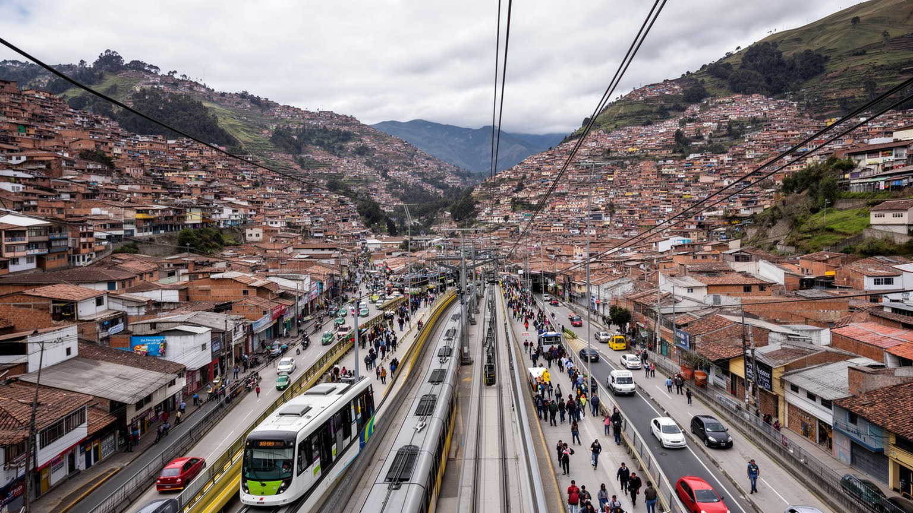
キトの日常は、坂道と細長い都市をどう移動するかに大きく左右されます。市街地は南北に長く伸び、住宅地、旧市街、北部の業務地区、空港方面、東の谷が離れているため、通勤や通学は生活時間を大きく奪います。BRT、路線バス、地下鉄、タクシー、徒歩、テレフェリコは異なる役割を持ちますが、駅や停留所までの坂道、治安、雨、乗り換え、運賃、混雑は地区ごとに重さが違います。地下鉄の開業は南北移動を変え、旧来の渋滞に代わる軸を作りましたが、公共交通の改善は線路だけでは完結しません。駅前の歩道、照明、露店の扱い、バスとの接続、障害者や高齢者の移動、女性の夜間安全まで含めて都市の使いやすさが決まります。朝の車内には学生、清掃員、役所職員、市場へ向かう販売者が重なり、車窓からはラジオのニュース、携帯通知、車のクラクションが混ざります。車中心の拡大は郊外住宅を広げた一方、谷の道路に混雑と排気を集中させました。観光客が乗るロープウェイの絶景と、住民が毎日乗る混雑した車両を同じ都市の風景として見る必要があります。移動は雇用、教育、医療、家族の世話へ近づける権利です。駅から家までの最後の坂道を軽くできるかが、改革の実感を決めます。屋台や小店も駅前の人流に合わせて一日の売り方を変えます。交通政策は車両数だけでなく、市民の一日の余白を取り戻す政策でもあります。
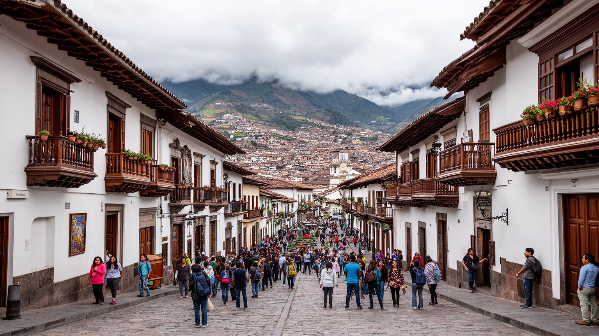
キト観光は、歴史地区の聖堂、赤道記念碑、テレフェリコ、火山の眺望、博物館、周辺高地への日帰り旅行によって成り立ちます。首都に滞在する旅行者は、ガラパゴスやアマゾン、アンデス縦断の旅の入口としてキトを使うことも多く、ホテル、空港送迎、旅行会社、飲食、ガイド、土産物店が広い観光回路を支えます。ですが観光の成功は名所の数だけでは決まりません。旧市街の安全、夜間の移動、歩道、案内表示、文化財の修復、住民生活との調整、環境負荷、ガイドの労働条件が滞在の質を左右します。週末には家族連れが公園や展望地へ向かい、若者はサッカー観戦やライブ、ラ・マリスカル周辺のバーを選び、観光客と住民の夜の動線が重なります。赤道の線を越える体験はわかりやすいですが、キトの深さは、教会の内部装飾、先住民市場、共和国政治、火山地形、日常の食堂をつなげて歩く時に見えてきます。観光客が写真を撮る広場は、住民にとって通勤路であり、祈りの場であり、商売の場所でもあります。観光圧が強まれば家賃や店舗構成が変わり、治安不安や経済停滞が続けば文化財の維持も難しくなります。土産物の値段交渉にも、地域の景気や通貨感覚が表れます。旅の価値を守るのは現在の住民の生活です。ガイドの説明、宿の安全対策、博物館の展示、地域メディアの案内が充実すれば、旅行者は写真以上の理解を持ち帰ります。
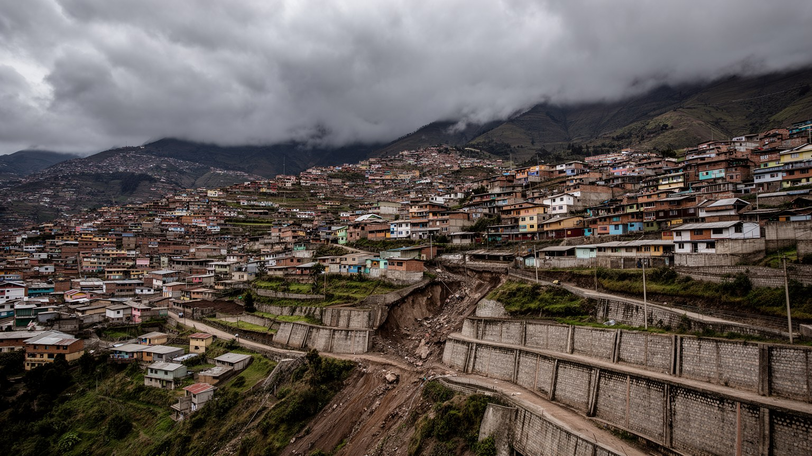
キトの住宅事情は、単に家の数や家賃だけでなく、地形と格差が重なる焦点です。谷底や平坦地には業務地区、公共施設、比較的整った住宅地が広がる一方、斜面や周縁部にはインフラが弱い住まいもあります。都市が成長するにつれ、中心に近い土地は高くなり、低所得世帯は遠い郊外や危険な斜面へ押し出されやすくなります。雨季には排水不良、土砂崩れ、道路損壊、住宅の湿気が生活を脅かし、地震や火山灰への備えも必要になります。住宅の安全は建物の強さだけでなく、学校、医療、交通、仕事、上下水道、インターネット、公共空間への距離で決まります。高台の眺めは美しくても、子どもの通学、高齢者の通院、買い物袋を持つ帰宅には坂道、階段、バス待ち、夜間の不安が伴います。再開発や高級住宅は税収を増やしますが、古い地区の家賃上昇や住民移動も生みます。近所の店、教会、学校、サッカー場、町内の連絡網は、災害時にも平時にも生活を支える小さな基盤です。家の前の小さな販売台や修理仕事も、家計を補う街路経済になります。旧市街の保存や北部のオフィスだけでなく、斜面の家、雨水の流れ、階段道、非公式な増築を見る必要があります。安全な土地に手が届かない時、人びとは危険を承知で住まいを作ります。そこに水道、排水、斜面保護、避難路をどう届けるかが、首都の社会的な信頼を決めます。
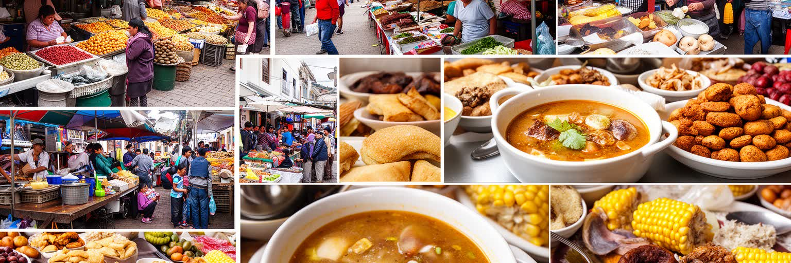
キトの食は、アンデス高地の気候、農村の産物、植民地以来の都市生活、現代の通勤時間を反映します。市場や食堂では、ジャガイモ、トウモロコシ、豆、米、鶏肉、豚肉、アボカド、チーズ、果物、ハーブが日常の皿を作り、ロクロ・デ・パパやセコ、エンパナーダ、チョチョス、温かいスープが高地の肌寒さに合います。昼食の定食は、働く人、学生、役所職員、観光客を同じ時間帯に集める都市の基礎インフラでもあります。市場の通路には花、香草、揚げ物、熟した果物の匂いが重なり、買い物客は値札、口コミ、携帯の送金通知を見ながら店を選びます。ショッピングモールは中間層の週末消費を受け止めますが、近所の店、屋台、移動販売は時間のない家庭や高齢者を支えます。食の豊かさは近郊農業と地方物流に支えられますが、燃料価格、道路封鎖、治安、気候不順、物価上昇がすぐに市場価格へ出ます。女性の調理労働、家族経営の店、配達員、朝早く仕入れる市場労働は、統計に表れにくい都市経済です。観光向けのレストランだけを見れば、キトの食は洗練された文化体験に見えます。しかし住民にとって食は家計、時間、健康、近所の信頼を測る日常の焦点です。学校帰りの軽食や試合後の屋台も、街の食の記憶を作ります。市場の値札や定食屋の混み具合は、統計より早く都市生活の疲れと回復を知らせます。
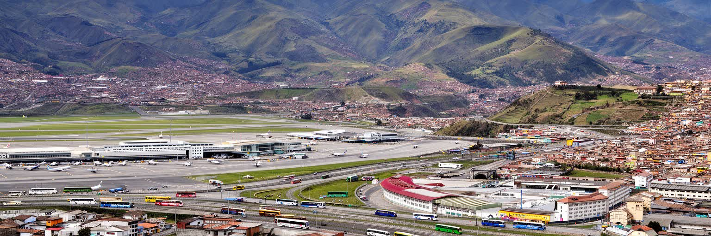
キトの国際空港は、市街地の谷から東側のタバベラ方面へ移り、首都圏の距離感を大きく変えました。旧空港跡は都市内の貴重な空間となり、新空港は国際線、貨物、花き輸出、観光、外交、移民の入口として機能します。エクアドルのバラや農産物は高地の冷涼な気候と空輸網に支えられ、空港周辺には物流、ホテル、倉庫、道路投資が広がります。一方で、空港が遠くなったことで、市内からの移動時間、タクシー料金、道路混雑、事故、燃料費、通勤負担も問題になります。早朝便に合わせて動く運転手、清掃員、警備員、花き梱包の労働者、空港の飲食店で働く若者は、国際接続の足元を支えています。東の谷や郊外住宅の成長は、中心市街地との関係を変え、土地価格、農地転用、水資源、学校や病院の配置、交通計画に影響します。空港へ向かう道のラジオ交通情報や家族への到着連絡は、広がる首都圏の情報網でもあります。歴史地区の古い中心だけでなく、空港道路、貨物施設、郊外の住宅地、花き産業の労働を見る必要があります。首都は内陸高地にありながら、空港を通じて世界市場とつながります。ですが接続は滑走路だけで成り立たず、道路、税関、冷蔵物流、周辺住民との調整に支えられます。空港地域の成長が公共交通や環境管理を伴わなければ、便利さは一部の利用者に偏ります。周辺の小商いも便数と季節に左右されます。
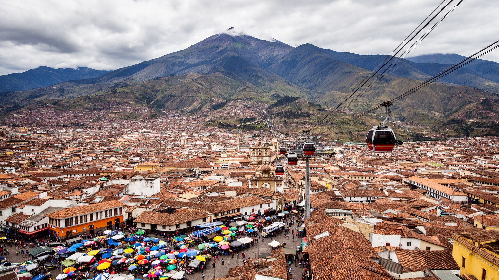
キトを読むことは、世界遺産の旧市街、赤道の観光、政府首都というわかりやすい印象を、アンデス高地の生活条件へ開くことです。火山と谷は都市の形を決め、政治機能は全国の対立を広場へ集め、先住民市場は農村と首都を結び、地下鉄やバスは細長い生活圏をつなぎ直します。観光客が見る聖堂や眺望は、住民にとって通勤路、信仰、商売、学校、家族の場所でもあります。週末のサッカー、丘の散歩、家族の市場買い、大学の授業、ラジオの交通情報、夜の音楽、教会の祭礼、子どもの登校、高齢者の通院まで重ねると、都市の輪郭はずっと具体的になります。キトの重要性は経済規模だけでは説明できません。エクアドル国家の意思決定、先住民運動の可視化、植民地遺産の保存、火山リスクへの適応、空港を通じた世界市場との接続が、同じ都市空間で重なっているからです。美しい高地の首都である一方、住宅格差、治安不安、交通負担、災害リスク、文化の観光消費といった課題も抱えます。旧市街の石畳だけでなく、斜面の住宅、駅前の人波、市場の値段、抗議の広場、空港へ向かう道を同じ地図に置く必要があります。山、国家、信仰、労働、移動が互いに押し合いながら形を作る都市です。高地の冷たい空気の中で、キトは過去の保存と未来の生活条件を同時に問います。だからこそ、日常の声を聞くほど首都の厚みが見えてきます。